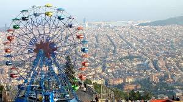
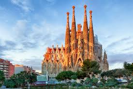

Activities:

Night Life:Without renting a car, visiting Girona and Costa Brava from Barcelona is difficult in one day. This small-group tour lets you do it with ease, so you get the most from the stops along the way. Explore Girona and medieval villages, and experience Costa Brava’s cliffs and beaches by walking the Camino de Ronda coastal paths. If you wish, upgrade for a private tour. Leave central Barcelona by air-conditioned vehicle and make the scenic journey to the Montserrat Monastery, a Benedictine abbey located high on Mt. Montserrat, just outside the city. On arrival, enjoy a guided tour as you learn how the monastery stands as a cornerstone of Catalan history and spirituality. Take in the basilica—home to the revered ‘Black Madonna’ statue—and the atrium, cloister, and main square. Afterward, continue to Oller de Mas, a winery set in a 10th-century castle. Stroll around the vineyards and delve into the wine-making process as you tour the barrel room and production areas. Finish with a tasting of three quality wines served with an assortment of tapas and a dessert. As you taste and relax, learn the secrets behind each varietal from your host. After a day of sightseeing and wine, your experience concludes at the original departure point in Barcelona.
Day Tours:Combining Montserrat Monastery with a winery visit for wine tastings is an unusual combination that’s difficult to arrange independently. This day trip makes it easy: with round-trip air-conditioned transport and a guided tour of Montserrat so you see and learn about all its highlights. Plus, your winery tour includes three tastings, tapas, and dessert, so you don’t need to budget for lunch. Leave central Barcelona by air-conditioned vehicle and make the scenic journey to the Montserrat Monastery, a Benedictine abbey located high on Mt. Montserrat, just outside the city. On arrival, enjoy a guided tour as you learn how the monastery stands as a cornerstone of Catalan history and spirituality. Take in the basilica—home to the revered ‘Black Madonna’ statue—and the atrium, cloister, and main square. Afterward, continue to Oller de Mas, a winery set in a 10th-century castle. Stroll around the vineyards and delve into the wine-making process as you tour the barrel room and production areas. Finish with a tasting of three quality wines served with an assortment of tapas and a dessert. As you taste and relax, learn the secrets behind each varietal from your host. After a day of sightseeing and wine, your experience concludes at the original departure point in Barcelona.

FC Barcelona Tours:Checking off the medieval city of Girona and villages of Costa Brava in a day from Barcelona is a big ask if you're doing it independently. This tour lets you scratch both off your list with no transportation worries—whisking you to Girona and two other historical towns you might otherwise easily miss. Plus, there’s a guide to bring the sights to life and an opportunity to swim at a Costa Brava cove. Board an air-conditioned vehicle in central Barcelona, and travel through the picturesque Catalan countryside to Girona. Learn about the city’s long past from your guide, and on arrival, enjoy a walking tour of the Old Town. See the 11th-century Cathedral and Roman-era walls, and get free time to stroll independently. Continue to Pals, a cobbled town coiled beneath the remains of a castle and, after an introductory tour, enjoy free time to explore. Then, pass Begur’s medieval castle on route to the Costa Brava seaside village of Calella de Palafrugell, famous for its rugged coves. Get free time for lunch (own expense) or to relax, perhaps choosing to swim from a cove or stroll around the clifftop Cap Roig botanical gardens (own expense). After reconvening at a pre-arranged time, your tour finishes at the original starting point in Barcelona.
Dubai Activities Specials
Enjoy a night out watching the best rated shows. You will laugh, cry, and many things in between.